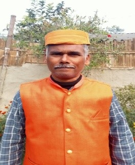

विदेह प्रथम मैथिली पाक्षिक ई पत्रिका

लालदेव कामत
सरपंच एहन होयबाक चाही/ 'आर्य ' एक यूनिक पोथी
१
सरपंच एहन होयबाक चाही
बिहारक एक स्त्री सरपंच अपन कमतर साक्षरताक बलेँ एक अनोखा काज ५ सालके
कार्यकालमे कय यशस्वी बनि गेलीह अछि। मिथिलांचलमे विशेष कय मधुबनी
जिलाक ३९९ पंचायतमे एहन अनोखा काज कोनू पंचायतमे नहि भेलैक हेन। हम
गप्प करैत छी फुलपरास अनुमंडल अन्तर्गत घोघरडीहा अंचलके सूदूर कोशी
क्षेत्रक सरौती ग्राम कचहरीक सरपंच श्रीमती शारदा देवी जीक । प्रदेश
केर राजधानी पटना स्थित चाणक्य राष्ट्रीय विधि विश्वविद्यालयमे ३८ जिला
सँ चालू सत्रक सबसँ अधिक काज कयल गेल एक - एक ग्राम कचहरीक लेखा - जोखा
कय एक सरपंच आ एक सचिवकेँ राजकीय सम्मान लेल ५ नवम्बर २०२६ ई० केँ एक
पैनल बनाओल गेलैक अछि । पुरस्कार लेल नामित ग्राम कचहरीक सरपंच आ सचिव
केँ अप्रील - २०२७ मे फेर बनाओल जेतनि। एहि विशेष आयोजनक' जनतब पुनः
देल जाइतैक। आने कचहरीक मापदण्ड अनुसार सञ्चालन करैत किछु विशेष सरौती
ग्राम कचहरीमे भ' भेलैक,जाहिक चर्चा सर्वत्र भ' रहलैक य। ग्राम कचहरीमे
दिवानी २५५ केश आ फौजदारी २७० मोकदमाके निपटारा भेलैक आ ६ गोट दरखास्त
पर निष्पादन होयबाक एखन विचाराधिन रहल छै। सरौती ग्राम कचहरीक ई ५२५ टा
झंझट - फसाद निर्धारित प्रक्रियाके तहत प्रति वादमे शुल्क सय टाका दर
सँ ५२५ वसुलल गेलैक,आ आर्थिक दण्ड मद्द सँ २३०० टाका प्राप्त ई सँ कुल
चौवन हजार आठ सय टाका बैंकक सरकारी खातामे सचिव श्री रव्बि राम जमा
करौने अछि। मधुबनी जिलाक प्रथम स्थान पर ई पंचायत चिन्हित कयल गेल।
माननीया सरपंच जीक नैहर पर्सा मौजेके नवटोली गाम आ सासुर सरौती गामक
लव्ध प्रतिष्ठित केवट परिवारमे छन्हि। सरपंच जीक कामकाजमे हुनक पति
श्री राजेन्द्र बाबू सहयोग करैत रहलनि अछि। श्री राजेन्द्र कुमार जी
मधेपुर उच्च माध्यमिक विद्यालयक प्रधानाध्यापक पद सँ सेवानिवृत्त भेल
छथि। आओर ओ जिला स्काउट एवं गाइड केर मास्टर रहल छथि। हुनक प्रखंड
आत्मा० केर क्रियाकलाप कृषि - वानकीमे प्रमुख रूपसँ रहैत छन्हि। हुनक
पूर्वज दीप गाम सँ सरौती आबि बसि गेलाह। बादर कामत पेसर पत्ती कामत
जीकेँ दू गोट पुत्र भेलनि ,यथा-: बच्चा कामत आ लाली कामत । बच्चा कामत
केँ चारिटा पुत्र रहनि, क्रमशः भजी, रामजी, लक्ष्मण आ बिहारी। बिहारी
कामत जीकेँ पाँच पुत्र भेलनि ,तथा -: सुबे , शिवनन्दन , राम गुलाम,
रसीद आ कल्लर । राम गुलाम जीकेँ पुत्र जगदीश ओ पुलकीत एक माय संँ ,
दोसर माय सँ किसुन, राजेन्द्र, महेन्द्र आ डॉ० (प्रो०)उपेन्द्र कुमार
जी। श्रीमान् राजेन्द्र कामत जीक मातृक अड़ेर भण्डारी परिवारमे छन्हि।
ग्राम कचहरीक संचालन वाढ़ आस्था भवनमे सप्ताहमे एक दिन होइत अछि। पक्ष
- विपक्ष आ साक्षी - गबाहीकेँ गंगाजी सँ सिक्त कय अपना धर्म ग्रन्थ पर
हाथ राखि सच लेल सपथ पूर्वक व्यान होइछ। अदालत केर तरफ काठघरा सेहो
न्याय पीठ समक्ष कायम रहैछ। एहन गतिविधिक अवलोकनार्थ मुख्यत: दुरस्थ
धरिक लोक अबैत रहल अछि। एहन अदभुत ग्राम कचहरी कियाक ने पुरस्कृत होयत!
२
'आर्य ' एक यूनिक पोथी
वैदिक कालक इतिहास ओ संस्कृतिक संक्षिप्त काव्यात्मक परिचय निमित्त
नवारम्भ प्रकाशन सँ सद्यप्रकाशित 'आर्य ' मैथिलीक १२६ पृष्ठ'क कविता
पोथी बहराएल हेन। जाहि पोथीक मोल ३०० टाका छैक आ आई एस बी एन ९७८- ८१-
६९३९९- १८-० भेटल छैक। पोथी ' के रचैता कविवर राज किशोर मिश्र जीके
एकबिश नव कविताक पोथी छैन। तेँ काव्य जगतमे कोनू नैका परिचय केर लेल
मोहताज नहिं छथि। आर्य नामक पोथीमे अनेको पोथीक सारांश आ किछु
भावानुवाद सेहो दृष्टिगोचर होइत छैक। ऐ अकविता अर्थात् नव कविताक
संग्रह केँ पटल पर आनि अपना आर्य समाज सँ उऋण भेलाह हेन। प्राचीन
भारतमे मूल निवासी द्राविड़ (अनार्य) आ आगंतुक विदेशी आर्य कहौलनि।
आर्यावर्त नाम सेहो भारतके बढ़ पुरान रहल अछि,जे आर्यक आगमनक वाद वैदिक
कालमे नाम पड़ल छल। सिन्धु सभ्यता सबसँ पुरान रहल छैक। मोगलके आगमन सँ
सिन्धु केँ उच्चारण ओ हिन्दू रूपेँ करैत भारतके तेसर नाम हिन्दू स्थान
अर्थात हिन्दुस्तान राखल। एहि तरहेँ अंग्रेजक आगमन सँ ओ सभ भारतकेँ
हिन्देयन केँ इंग्लिश उच्चारणमे इंदियन कहैत - कहैत इण्डियन कहय लागल
,जे कालान्तरमे इण्डिया नामे जगजाहिर भऽ गेल छैक। भारतवर्षमे पहिले बौध
धम्म टा छल। से आगंतुक लोकनि अपन धर्म-कर्म,मजहब संगमे आनि एतुका
रहवासी सँ घुलिमिल गंगा - यमुनी संस्कृतिमे खिल्लत - मिल्लत भऽ सामाजिक
जीवन परिष्कार करैत गेलाह। वादमे महर्षि दयानंद सरस्वती जी आर्य समाज'क
विधिवत स्थापना कयलन्हि। ताहू सँ पूर्व आर्य संस्कृति की कोना रहल छल
,तकर विशद् अध्ययन कऽ एक ठाम संक्षिप्त रूपेँ समान्य जनकेँ लाभार्थ
धार्मिक - सामाजिक व्यवस्थाक समन्वय स्वरूपक ई पोथी मातृभाषा मैथिलीमे
गढ़ि श्री मिश्रजी एक महत्वपूर्ण काज कय पाठक बीच राखलाह अछि।
आर्य 'काव्य ' पोथी केँ कविवर महोदय समर्पित कयने छथि मंत्र द्रष्टा
ऋषि लोकनिकेँ। मूल पाठ्य मैक्समूलर द्वारा सम्पादित ऋग्वेद संहिताक
अनुसार देबाक तथ्य 'भूमिका' मे गच्छलनि अछि। अध्याय -१ मे आर्य केर मूल
स्थानक चर्चा सँ पूर्व प्रकृति वर्णन 'सप्तसिन्धव ' मे एहि प्रकारे
पाँति रचलाथिन्ह अछि -:
आएल वसंत मास सुन्दर
धमल बर्फ , हिम द्रवित प्रवाह
बैसल कछेरमे जलपक्षी ,
कलहंस - प्रणय - क्रीड़ा गबाह।
पार्वत्य वनमे झुण्डक - झुण्ड कुरंग,भेड़ा ,बकरी, गाए, बयसिंहा सहित
आनो पशु सब विचरण करैत रहैक । ग्रीष्म ऋतुमे देवनार गाछक नीचाँ लतरल -
चतरल बुटी,लत्ता , देखि हर्षित भऽ दिनक गरमी आ रतुका ठंढ़ीमे सुरभिमासक
परम सुन्दरता मादे नर - नारी मधुर स्वरमे अनुराग सँ गबैत रहथि। अपन
गायनमे अग्निसँ विनय करैत छथिन जे हमरा मीठ फल आ मौध भेटय ।
क्रौंचदीप घिउ समुद्र पछिम ,
शाकद्वीप अलताइ दिस ,
चीनक उत्तर बसल छलैक
पुष्कर द्वीप नाम सरिस।
हिमपातसँ , हिमप्रलयसँ ,
अतिसेँ जलवायु परिवर्तन,
प्रस्थान आर्यक ओहि क्षेत्रसँ ,
संभवतः प्रकृतिक समर्थन।
वक्षु , पामीर हिमनदसँ नि:सृत
हिंदुकुश, नद पंचकोरा , कुनार
बहुत दिक्कतिसँ आर्यलोकनि
कयलनि दुर्गम क्षेत्र सभ पार ।
जंगल - झारमे मौध फल तँ रहैक,मुदा ओहि बोल्गा तटपर पशुधन नहिं रहैक।
कोनू यातायात लेल दरिया जलमे नाह आ सुखल प्रवण क्षेत्रमे पशुक सहारा सँ
जीवन जीवन्त रहैत छलैक,ता मटरगाड़ी नहिं छलैक। से कठिनता सँ त्रस्त भऽ
आर्य लोकनि अनार्य क्षेत्रवासी लग ऐबाक नियार - भासकेँ अमली-जामा
पहिरेलथि। मध्य एशिया'क वर्णनमे कवि पाँति रचलाह अछि -:
हरियर - हरियर पहाड़सभ
बहैत ठाम - ठाम सरिता ,
बसंत मास खगवृंद गबैत
सौन्दर्य रस'क जनु कविता।
तम्बुक घर , अरणिसँ आगि,
बकरी गाय लेल अजस्र घास
अंगुर लत्तामे फऽड़क झाबा
पसरल छल चहुँदिस आसपास ।
मध्य एशिया , रन्हा - दतिया,
दूहू नदीक बीच एरानवेज ,
आर्य शाखा भऽ कऽ विभक्त
बढ़ि चलल जम्बूद्वीप सहेज ।
आरो किछु पांतिमे देवदारक वन दृष्टिपात करब। टमटमसँ यात्रा दुर्गम
राहसँ करैत ,देखैत दृश्य सबके एहि तरहेँ वर्णन लेल पाँति रचि देलनि य
-:
सुवास्तुक बाम कछेरमे
भूधरपर सघन हरियरी मारि ,
जजाति खेतमे लहलहाइत,
दोआरि सजल देवदारक ठारि।
समाज शास्त्रीय रूपसँ तिलकक कहब जे मध्य एशिया यूरोप नहिं ,ए.सी.दासक
कहब जे सप्तसिन्धव रहनि। ओना आर्यक मूल स्थान बावत विद्वानगणमे
अनुमानित जगहक स्वत: चयन कयलन्हि। यथा,
ओना आर्यक मूल स्थान पर
विद्वतजन बीच अछि विभेद,
नहिं उल्लेखित स्पष्ट अछि
ई, चारूमे सँ कोनो वेद ।
ऋग्वेदमे किछु एहने सन
छओ मासक दिन ओ राति,
उत्तर ध्रुव लग पूर्व निवास
आर्यक तँ, ने छलनि साइत ?
ऋग्वेदमे समुद्रक वर्णनमे उत्तर भाग शृंगी श्रेणीक शैलषड, हिमालय
हिन्दूकुश काराकोरम ,पूरब भागमे बंगालक खाड़ी महासमुन्द्र। पछिम भागमे
अरब सागर, दक्षिण तँ हिन्द महासागर बुझले य। भारतवर्षक जम्बूद्वीप
संपृक्ति केर मध्य सरस्वती नदी ,शतूद्री ,वितस्ता, विपाशा ,अशिक्नीकेँ
सप्तसिंधु कहल गेल, परुष्पनी लगायत। ताहि बीच मूलरुप सँ मानव सभ्यता
पूर्वहिसँ विकसित रहय जे भारतके मूल निवासी रहल छैक । एहि सब
सौहार्दपूर्ण मिल्लत सँ वैदिक कालमे आर्य - अनार्य रहय लगला।
मंत्रद्रष्टा ऋषिसभ द्वारा
वेद रचना एत्तहि भेल ,
सभसँ प्राचीन ग्रन्थ धरापर
ऋग्वेदेके मानल गेल।
एकटा आरो पाँति द्रष्टव्य अछि -:
रचल गेलै अनुशासन - पद्धति, शिष्टाचार
जन्म सँ लऽ कऽ मृत्यु धरिक कोन-कोन संस्कार
निर्धारित भेलैक वैवाहिक विधिः विधान व्यवस्था,
आश्रम-धर्म आओर जिनगीक भिन्न-भिन्न अवस्था इहलोक - परलोक जिनगीक बनाओल
गेलैक यात्रा - वाट ,
परा विद्या - अपरा विद्या , सृष्टि - विद्याक फुजलैक कपाट।
मैथिली तुकमिलानी आ पद्य जोड़ैत काव्य रचनामे श्री मिश्रजी खूब रमल
छथि। अनेको पढ़ल पोथीक भाव एक संग पाठक लेल संक्षिप्त रुपेँ दैत एक
उपकार मैथिली साहित्य लेल कयलनि। हिनक एहि साल २०२६ मे प्रकाशित "आर्य"
पोथीमे पाठ दर पाठ पढ़ैत अकक्षा नहिं सकब,पढ़बाक जिज्ञासा बढ़िते जाएत।
ऐतिहासिक धार्मिक बोध सामान्य जनकेँ होय , ताहि परम उद्देश्यक पूर्ति
लेल पूर्ण मनोयोग पूर्वक अध्ययनशील रहैत छथि। ताहि समयके सदुपयोग कयलाह
आ संक्षिप्त काव्यात्मक परिचय सिरजैत रहलाह हेन। तेँ फेर सँ एहि बात कय
कहलौं अछि। ओ अध्याय -२ वैदिक ग्रन्थ मादे पृष्ठ २० सँ ४३ धरिमे वेद
,ब्राह्मण , आरण्यक , उपनिषेद्,वेदांग,उपवेद केँ व्याख्यायित अपन
पांतिमे संतुलित रुपेँ कयलाह हेन। अध्याय -३ मे वेद ओ उपनिषद सँ किछु
चयनित संवाद सभ यथा- विश्वामित्र - नदी संवाद , यम - नचिकेता संवाद, आ
सरमा - पणि - संवाद केँ पृष्ठ सं० ४४ सँ ५४ धरिमे स्थान देलाह अछि।
चारिम अध्याय सेहो बढ़ रुचिकर छैन जे वैदिक कालक किछु चयनित कथा सभ
यथा, उर्वशी- पुरुरवा, दाशराज्ञ युद्ध , श्यावाश्व , सावित्री -
सत्यवान , आओर नल - दमयंती संदर्भमे पृष्ठ ५५ सँ १०० धरिमे सम्यक रुपेँ
उल्लेख कयलनि अछि। वैदिक कालके जनपद ओ राज- व्यवस्था , आर्थिक जीवन,
सामाजिक जीवन ओ धार्मिक जीवन केर अध्याय ५ सँ ८ धरिमे निरुपित कयने
छथि। आखरि पाठ नवम् अध्यायमे वैदिक युगमे विज्ञान संबंधी विषयवस्तु केँ
छुने छथि। पोथी 'क प्रामाणिकता लेल संदर्भ रूपें परिशिष्ट दैत कठिण
शव्दक पर्यायवाची शब्द जनाओल गेल छैक,जे पाठककें शाब्दिक अर्थ बुझबामे
सहायक भेल अछि। समकालीन भारतीय साहित्यिक लेखन पर गम्भीरता सँ आड़ू
बढ़ेबाक लेल एक बेर हृदय पर हाथ राखि सोचब आजुक सम्यक माँग थीक। कविता
विधामे तँ लिखबाक बाढ़ि आबि गेल छै।नीक करय लेल गद्य लेखन काजमे गति
आनबाक हुअय,जाहि सँ मैथिली भाषा समृद्ध होयत।
अपन मंतव्य editorial.staff.videha@zohomail.in पर पठाउ।
विदेहमे सभठाम ताकू / Search all Videha
Static full-text search · Pagefindलेखक/शीर्षक/अंक/वर्ष — खोज-विधा। गद्य/पद्य/शोध current/static + पुरान Videha/Sadeha contents खोजैत अछि। पोथी pothi.htm केर पूर्ण listing, श्रव्य-दृश्य Audio_Video.htm केर पूर्ण listing, पञ्जी videha-sadeha/panji-shards GitHub data, आ थेसारस/शब्दकोश videha-ejournal.github.io/data GitHub JSON corpus केँ query करैत अछि आ दूनू Quiz corpus मे dictionary/vocabulary/शब्दार्थ-सम्बन्धी प्रश्नोत्तरी परिणाम सेहो जोड़ैत अछि। Quiz videha-quiz आ GitHub user-site दूनू bilingual quiz corpus खोजैत अछि। Roman/IAST + देवनागरी cross-script search समर्थित। Issue/Year लेल संख्या दिअ। PDF-अभिलेख archive.org/VidehaAndSadeha सूची खोजैत अछि।